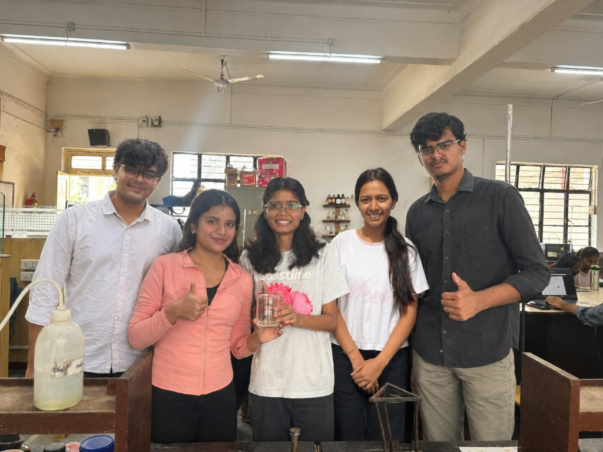
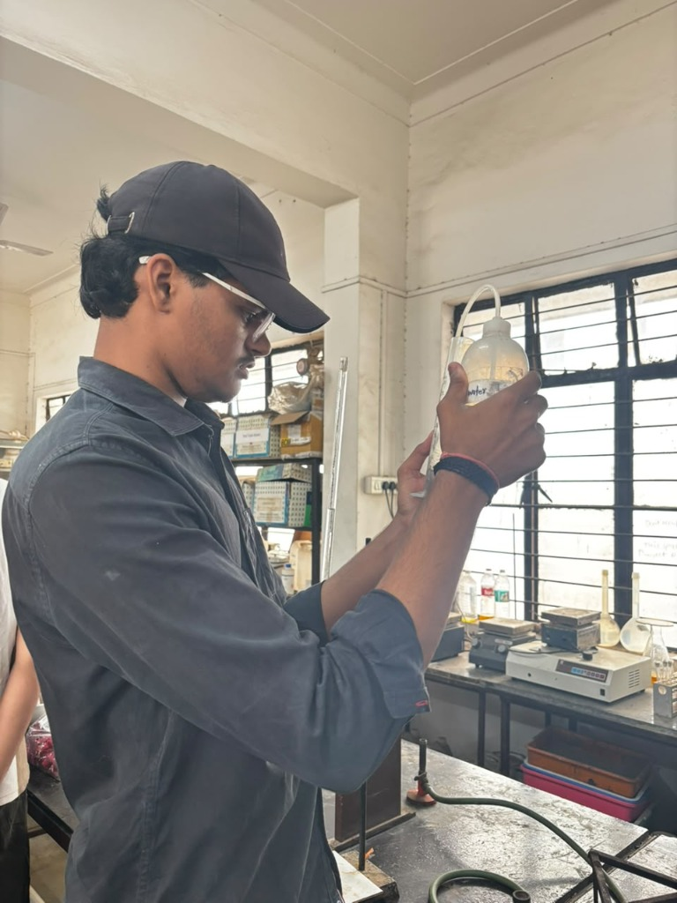
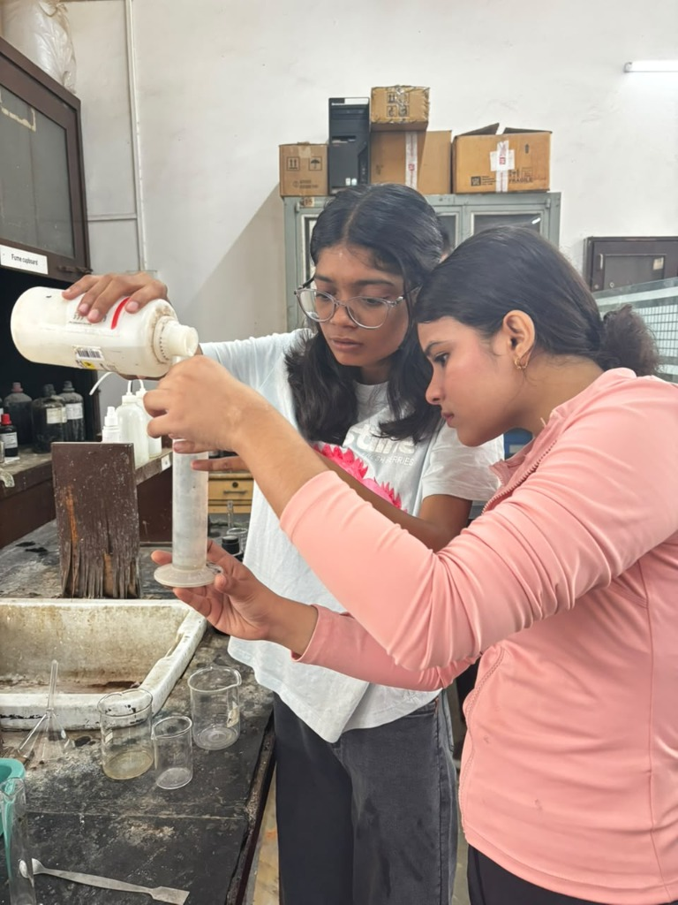
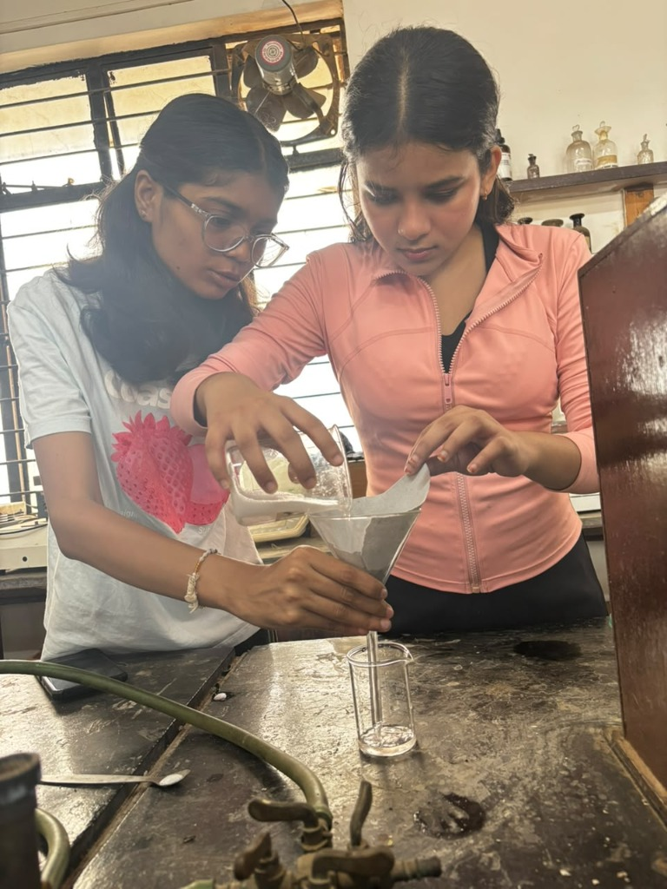
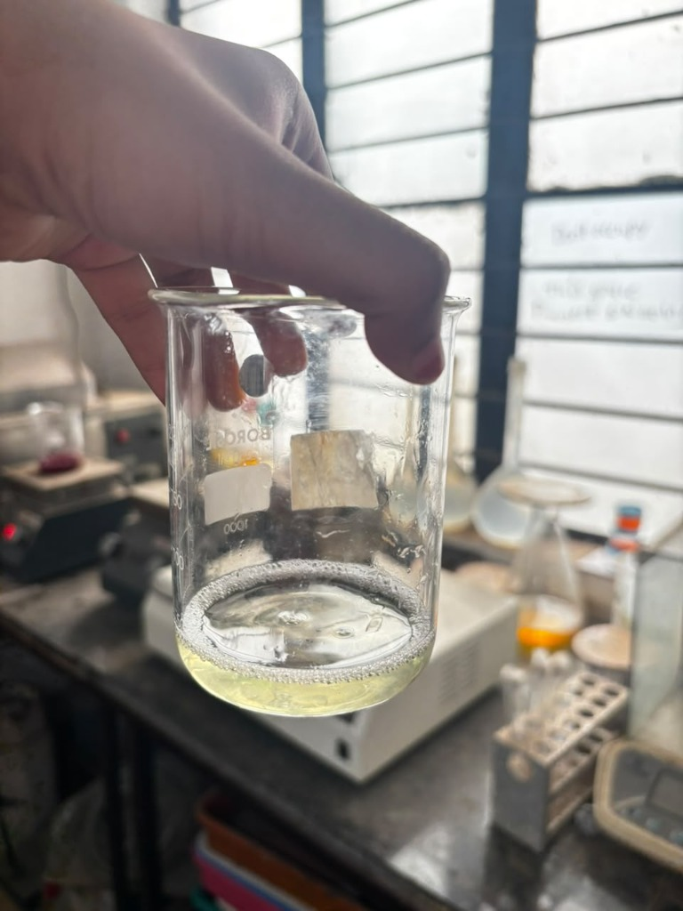

An end-to-end undergraduate chemical engineering project synthesizing a balanced, soothing bodywash formulated with Aloe Vera, Salicylic Acid, SLS and calibrated at optimal skin pH 5.0.

Each ingredient was measured and blended to achieve optimal cleansing, humectant hydration, and dermal safety.
H₂O
The universal solvent forming 65% of the formulation base. Demineralized to prevent electrolyte interference with anionic surfactants.
C₂H₆O₂
A diol carrier that dissolves lipophilic actives like salicylic acid, prevents freeze crystallization, and maintains formulation viscosity.
C₃H₈O₃
A trihydroxy alcohol providing intense hygroscopic hydration by drawing atmospheric moisture directly into the stratum corneum.
C₆H₈O₇
Tri-carboxylic organic acid used to titrate and buffer the alkaline surfactant mixture down to the skin's healthy acid mantle (4.8–5.2).
C₁₂H₂₅NaO₄S
Anionic detergent with a polar hydrophilic head and nonpolar 12-carbon lipid tail. Lowers surface tension and generates rich micro-foam.
C₇H₆O₃
Beta-hydroxy acid that penetrates sebum-filled pores to dissolve desmosomes, clear keratin debris, and prevent acne breakouts.
Acemannan Mucopolysaccharides
Rich in bioactive acemannan, glucomannans, and zinc. Calms surfactant irritation, accelerates epidermal renewal, and leaves a silky post-rinse texture.
How surfactants, acids, and humectants behave on a molecular level during washing.
Above the CMC, SLS molecules self-assemble into spheres. Non-polar tails point inwards to encapsulate insoluble grease, while ionic heads interact with water to rinse it away.
Citric acid buffers against alkalinity. By donating hydronium ions, it counters the high pH of raw surfactants, preserving the skin's acidic lipid bilayer against opportunistic bacteria.
Because salicylic acid is oil-soluble, it dissolves past surface sebum and hydrolyzes intracellular adhesive desmosomes between stratum corneum squames.
The three hydroxyl groups in glycerol form coordinate hydrogen bonds with water clusters, slowing trans-epidermal water loss (TEWL) post cleanse.




Drag the slider to observe how chemical titration impacts liquid color, pH strip response, and cutaneous safety.
Follow the complete lab methodology our team conducted to formulate, blend, and test the bodywash.
Distilled water (250 mL) was measured into a sterile 500 mL borosilicate beaker as the liquid foundation. Using medical-grade graduated syringes, precise quantities of ethylene glycol and glycerine were dispensed to ensure exact molar ratios.
Salicylic acid crystals are hydrophobic and insoluble in cold water alone. The acid was pre-dissolved in ethylene glycol at 40°C with continuous magnetic stirring. The resultant golden solution was filtered through Whatman filter paper to eliminate any undissolved particulates.
Sodium Lauryl Sulfate powder was introduced incrementally into the water phase under low-shear mixing (120 RPM). Rapid agitation was avoided to prevent excessive aeration and entrapment of air bubbles, yielding a stable uniform micellar dispersion.
The pre-dissolved active phase (salicylic acid + glycol) was blended into the surfactant base, followed by glycerine and pure aloe vera gel. Mixing was sustained for 15 minutes until complete rheological stability and silky consistency were achieved.
Citric acid solution was titrated dropwise into the formulation while testing with calibrated pH strips. Upon achieving equilibrium at pH 5.0 (natural skin mantle), the bodywash was decanted for clarity, foam stability testing, and storage in pump containers.
Visual engineering schematics mapping every stage from raw feedstocks to quality controlled product.
Live video demonstration of our bodywash formulation and foam generation.
Drop your laboratory MP4 file into images/lab-video.mp4 or enter a YouTube embed URL below:
A critical engineering evaluation of the formulation's clinical utility and industrial scaling viability.
Challenge your understanding with dynamically generated multiple-choice chemistry questions.
The dedicated undergraduate engineering team behind the AloePure formulation project.
Lead Formulator
Reagent titration, surfactant micelle calculations & laboratory safety.Lab Coordinator
Experimental procedure sequencing, documentation & quality control.Chemical Analyst
Kinetic analysis, BHA active dissolution & pH equilibrium optimization.Process Documentation
Process flow diagram, block schematics & quantitative mass balances.Quality Control
Microbial barrier assessment, foam stability testing & packaging verification.